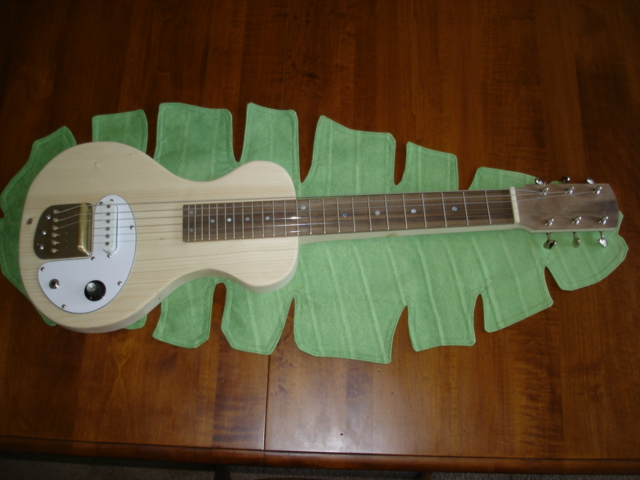

Select your area of interest:
Home* Lap Steel* 3 String Guitar* "Regular" Guitar* Violin* Bass*Banjo* Mandolin* Ukulele* Home Recording* Woodworking* Links
Lap Steel Information:


Bluestem Lap Steel Construction Guide on CD with full size plan!
The guide is currently priced at $25 with first class US post office shipping included within the United States, the cost is $30 to locations outside of the United States. Your purchase allows me to pay for the tremendous bandwidth and usage this site gets without the need to sell advertisement space.
Paypal:
Please e-mail me with "Bluestem Info Request" in the subject line if you are interested in purchasing one of the guide packages by check or postal money order. I accept payment in any form you wish, although personal checks take an additional 10 days to clear my bank before the guide is shipped.Lap Steel as constucted from this guide:

The full size 35" by 20" construction plan:

Bluestem Lap Steel Guitar Construction Guide consists of:
- Full Size 35” by 20” printed plan for the Bluestem 6 string Lap Steel Guitar
- “How to use this CD guide” printed instructions
- CD-ROM with 975 pictures, descriptive text, video clips, and pdfs to assist with building
- Bonus content includes the ENTIRE original lap steel building guide (see description at bottom of this page)
See what it's all about on youtube:
"Why would you want to build your own instrument?"
I've been building most of what I play for over 30 years now. I started my journey into instrument construction when I began to desire a really good acoustic guitar but lacked the funds to purchase one. I considered my options and after much deliberation I decided that DIY might be a good option for me. I realized that putting my sweat equity into making one would greatly offset the total cost. I possessed the mechanical aptitude for the job, and realized that somewhere in a far-off factory someone just like me was actually responsible for building the object of my desire. So off I went for schooling. Not literally, but I did what I could in the days before the internet and purchased a book that would guide me through the process of constructing a guitar. Actually two books, everything I could find at the time! I read them cover to cover and combined techniques from the two authors to create my first guitar. Two books turned out to be a good idea as it brought me to the realization that there are multiple ways to accomplish the same task, some good and some not so good.I followed my instincts and turned out a pretty good first attempt as that guitar is still being played today. It made me realize that there is a bonding process that takes place when a musician plays an instrument that they have created that a lot of other folks don't get to experience. It brings a smile and memories back when I catch an occasional bit of aroma emanating from the sound hole on particularly humid days. I'm instantly transported back to the steam bending of the sides and forming the walnut into what would become my very own creation. That's something that no amount of money can buy.
Beyond the intrinsic connection that can be made by playing what you have made with your own hands, there are creative and economic aspects to consider. I get much joy from pushing the creative envelope to build instruments that I feel are unique and possess details that are not available anywhere else. The lap steel guitar is certainly an instrument that is somewhat frozen in a design from an earlier era and is ready for some creative input. The Bluestem lap steel design takes its clues from that older era and puts a modern spin on the design and ergonomics.
It's said that a picture is worth a thousand words. I find that to be true, as I think most people can learn visually much better than trying to discern meaning from text only. The photos and text on the CD provide details about some of the techniques I’ve developed over many years of building instruments. I wish there would have been something similar when I first started building instruments, but there were few resources available other than a few books on guitar or violin family instrument construction, and the web was still several years in the future. That's why I'm putting out this Lap Steel Guitar Construction Guide CD. I can only make so many instruments in my lifetime, so this is a way to pass on what I have learned so others can use it to increase the number of great lap steels in the world.
CD contents:
- How To Use This CD Guide.doc
- Bluestem Lap Steel Construction Picture Guide And Notes.doc
- Assorted pdfs to assist with design and layout of lap steels
- PICTURE FOLDER contains 975 photos of the building process arranged in sequential order
- VIDEO FOLDER contains videos of some techniques used in the building process and a demo of the finished lap steel guitar
- BONUS FOLDER includes the ENTIRE original lap steel building guide, see the description below.
An excerpt from the Bluestem Lap Steel Guitar Construction Guide:
INTRODUCTIONHere is an overview of the construction process of a lap steel guitar as shown in the pictures and outlined on the plan. The plan details a typical 22-1/2” scale length Bluestem-style lap steel guitar, but specifications for a 24" alternate scale length are also shown. Although the lap steel detailed in the guide is built as a 6 string, the instrument can be easily modified to accomodate additional strings, different scale length, wider string spacings, or a miriad of other choices. The lap steel is a particularly forgiving instrument to build, so the sky's the limit as far as design choices go. A standard set of dimensions are given, but there is also information given to taylor your build to whatever you desire.
The guide can be thought of as not only being a guide to building the example instrument, but also a design primer to guide you in making any flavor of lap steel guitar imaginable.
A WORD ABOUT THE DESIGN
The Bluestem lap steel was loosely patterned after a Oahu Tonemaster, but modified extensively to improve ergonomics, appearance, and function. The guide details the building of the same lap steel that I produce and market, but utilizes a simplified single coil pickup design. This was done so I could fully demonstrate my pickup winding process for those of you who would have a desire to "roll your own" pickup. This also allows the substitution of any other type of pickup you would desire.
A WORD ABOUT TOOLS
I do assume that the builder will have access to a medium sized drill press and a few other common shop tools, particularly a bandsaw. You can accomodate many of your woodworking needs without large and cumbersome machinery, and I use a 6" throat 12" Delta band saw for virtually all of my band saw needs. I even use this saw for re-sawing 6" lumber for top overlays and such. I also prefer tools that can be wheeled around the shop for easy cleanup or the occasional outting to the driveway for fresh air and sunshine woodworking sessions.
My "favorite" tools list looks something like this:
1. Drill Press, I use it more for planing, jointing, and sanding operations more than drilling.
2. Wagner Safe-T-Planer to use in conjunction with the drill press. It performs many planing, surfacing, and jointing operations.
3. Band saw, 12” is a good size for a small shop (you can’t conceive how useful a band saw is until you have one…)
4. Small combination 6” disk / 4” belt sander (I love ‘em so much I’ve worn out 3 over the years...)
5. Vertical oscillating spindle sander (Used for heel profiling and other shaping, but other tools can be used for these tasks)
6. Small circular saw setup used to cut fret slots (Not needed for producing a few instruments, but saves me A LOT of work for the number that I produce) It is documented in the guide text.
Other standard tools that would commonly be found in the home shop are used for many of the tasks shown. I'm also particularly fond of my 5" random orbit sander. I usually purchase the inexpensive Black and Decker and buy a new one every few years.
Follow the building guide outline and accompanying drawing and the result will be a great lap steel guitar that you can be proud to say you have made.
Strive for perfection, learn from your mistakes, accept and be humbled by your results!
Using the guide:
The “INITIAL PHOTO OVERVIEW” section contained on the CD is first printed out and used as a quick reference in selecting the desired section of photos. The photos contained in the folder labeled “Bluestem Lap Steel Construction Guide Pictures” can then be accessed by any photo viewing program to sequentially follow the construction process. There is corresponding text explaining each step shown in the photo documentation detailing the lap steel construction process.A few assorted example photos from the pictorial guide:
Navigating through photos with the recommended IRview photo viewer:
Rough cut body wings:

Layout of the lap steel headstock:

Tracing wing outline to prepared body blank:

Alignment of pickup bobbin to lower mounting plate:

An excerpt from the Bluestem Lap Steel Guitar Construction Guide text:
INTRODUCTIONThe plan and photos contained in this guide are designed as a tour through the construction process of building an authentic copy of the Bluestem lap steel guitar. Please note that the complete original version of the guide available prior to this one is available in the “BONUS” folder. The lap steel presented there is a bit simpler in design and could well suit someone with a very limited knowledge of woodworking in general.
You’ll find all of the comments pertaining to the individual photos contained within the pages of this guide. The original version of the guide featured captioned photos, but the format presented here allows me to modify or add information to the guide as it becomes necessary.
It may seem like a daunting process to construct an entire instrument, but it’s a goal that can be accomplished if it’s approached in a “one step at a time” manner. A journey of a thousand miles begins with a single step, that’s about 2,210,000 steps by my quick reckoning. Lap steel guitar building thankfully doesn’t require quite that many, but it is still necessary to not rush the process or try to make it a weekend project.
Review this guide thoroughly, gather materials, set aside a work area and roll up your sleeves!
A WORD ABOUT THE BLUESTEM LAP STEEL DESIGN
The plan itself details the construction of the lap steel guitar that I have been producing (with several variations) for the past several years. It is a solidly built instrument with a modern body shape with the 22-1/2” scale length commonly preferred by most players today. The dimensions can be easily modified if you desire a wider neck width, different scale length, string number and/or spacing, pickup type, or other personal preferences. The plan itself has details for many of these types of variations included on it.
WHY THE PICTORIAL FORMAT?
The photos and text provide details about the techniques I’ve developed over many years of building instruments. I wish there would have been something similar when I first started building instruments, but there were few resources available other than a few books on guitar or violin family instrument construction, and the web was still several years in the future. I can only make so many instruments in my lifetime, so this is a way to pass on what I have learned so others can use it to increase the number of great lap steel guitars in the world. The pictorial format literally allows you to look over my shoulder while I build an instrument start to finish.
A WORD ABOUT TOOLS
I do assume that the builder will have access to a medium sized drill press.
A good drill press is at the top of my favorite tools list, which looks something like this:
1. Drill Press (like chocolate cake to me...) I use it more for planing, jointing, and sanding operations more than drilling.
2. Wagner Safe-T-Planer (used in the drill press, it’s like the butter cream icing for the cake)
3. Band saw, 12” is a good size for a small shop (you can’t conceive how useful a band saw is until you have one…)
4. Small combination 6” disc / 4” belt sander (I’ve worn out 3 of these I love ‘em so much…)
5. Vertical oscillating spindle sander (Used for body profiling and other shaping, but other tools can be used for these tasks)
6. Small circular saw setup used to cut fret slots (Not needed for producing a few instruments, but saves me A LOT of work for the number that I produce)
Other standard tools that would commonly be found in the home shop are used for many of the tasks shown. Your shop environment may well be different than mine and you may well chose alternate ways to perform the individual steps, but following the guide photos, text, and accompanying drawing will produce a great lap steel that you can be proud to say you’ve made.
Strive for perfection, learn from your mistakes, accept and be humbled by your results.
ABOUT THE PLAN
The full size drawing eliminates the many steps involved in scaling up a smaller drawing to actual size. The full size plan also permits you to place semi-rigid plastic over specific areas and trace over it with a fine point permanent marker to create templates to transfer directly to your work. All of the critical dimensions are noted on the print or can be measured and used as shown. The lap steel guitar is not as critical as many other types of instruments as far as dimensions are concerned so this method works well.
SPECIFICATIONS:
6 string lap steel with 22-1/2" scale length
Natural matt finish maple body
Book matched flame maple body cap with contrasting ebony center seam
Ebony headstock overlay with mother of pearl “Mud Flap Girl” inlay
Gotoh enclosed deluxe tuners
Ebony fretboard with 1/4" and 5mm mother of pearl position markers
Twenty-four 18% wide profile nickel-silver frets
2" wide solid brass nut with 11/32" (1-3/4” total) string spacing
13/32” (2” total) string spacing at bridge
Solid brass bridge on stainless steel bridge plate
String through design with rear body recess for string ball ends
Bluestem single coil pickup mounted in black oval cover plate
Control cavity lined with copper shielding
500K CGE audio taper volume control with integral treble bleed circuit and large custom volume knob
1/4" Switchcraft output jack side mounted on stainless steel jack plate
Stainless steel screws used at all body locations
MATERIALS LIST:
(1) 8/4 hard maple center section (example shown is 36” by 4” by 1-7/8” thick)
(1) 4/4 figured maple for top overlay (example shown is 20” by 5-1/2” by 3/4” thick)
(1) Ebony headstock overlay
(1) Ebony fret board blank
(24) nickel-silver frets
(6) 3/16” mother of pearl dots
(6) 1/4” mother of pearl dots
(1) Mother of pearl head stock inlay
(1) Set 3 left / 3 right Gotoh deluxe enclosed tuners
(6) String ferrules for top
(1) 4” length of 3/8” by 3/4” brass for bridge
(1) 4” length of 3/4” wide by .060” stainless steel for bridge base
(2) 2” by #10X32 stainless steel screws with flat washers for bridge mounting
(1) 6 pole single coil pickup of your choice (shop wound used here to demonstrate pickup construction)
(1) 6” by 6” by .080” black guard material for pickup plate and rear control cavity cover
(8) #4 by 1/2” oval head stainless steel screws for component mounting
(1) Switchcraft 1/4” mono output jack
(1) side mount output jack plate
(1) 500K audio taper volume control
(1) .01 mfd. Ceramic disc capacitor
(1) 100K 1/2 watt resistor
(1) Volume control knob
HOW TO USE THIS GUIDE
Below you will find a complete reference to the photos found in the PICTURE FOLDER on the CD. All of the photos are sequentially numbered so they can be viewed individually or sequentially with any common photo viewing software.
I will suggest that you download and install the excellent freeware program entitled IRfanView, which is my personal favorite photo viewer. It is a small but powerful photo viewing and editing program that is simple to navigate and has a few features that make it particularly advantageous for our use here. One of its nicer features is the way you can easily select the area that you wish to view. Here is a quick screenshot to demonstrate its use:
It is available as a free download at:
http://www.irfanview.com/
The best way to use this photo index is to scroll down to the general area of interest highlighted by bold print and view the photos in that section while reading the accompanying text found in this guide. The general overview of the areas and range of photo and captions is shown below, with the detailed listing immediately following the overview.
The pictures are arranged in the exact same sequence used for building the lap steel shown. It’s certainly possible to skip between some of the sections if you familiarize yourself with how the instrument is constructed. The construction details can also be modified as desired. An example would be if it was desired to use a commercially available pickup such as a P-90 or a standard humbucker. Since I’m attempting to present as much information on custom building as I can, in this case you would want to skip photos and descriptive text for winding your own custom pickup.
INITIAL PHOTO OVERVIEW
(Refer to the “COMPLETE LIST OF PHOTOS AND CAPTIONS” below this initial photo overview for more detailed individual picture captions)
Completed Instrument-----------------------------------------------------------------------001
Materials----------------------------------------------------------------------------------------002
Body wing construction----------------------------------------------------------------------003
Neck and center section----------------------------------------------------------------------020
Profiling neck center section before adding wings-------------------------------------059
Adding body wings to neck center section-----------------------------------------------084
Planing body to desired finished thickness----------------------------------------------100
Preparing the figured wood top overlay--------------------------------------------------110
Preparing the top overlay for addition to the body-------------------------------------157
Preparing the body for addition of the figured wood overlay------------------------176
Fitting the figured top overlay to the body-----------------------------------------------201
Adding the figured top overlay to the body----------------------------------------------212
Cutting the body outline---------------------------------------------------------------------238
Sanding the body outline--------------------------------------------------------------------246
Removing the top overlay overhang at the front of the body wings----------------253
Shaping and sanding the rear profile of the neck--------------------------------------257
Rounding over the body edges-------------------------------------------------------------263
Fret board preparation----------------------------------------------------------------------270
Fret installation-------------------------------------------------------------------------------357
Gluing the finished fret board to the lap steel neck and body-----------------------386
Adding the head stock overlay-------------------------------------------------------------431
Adding the headstock overlay to the instrument---------------------------------------495
Planing and shaping the rear face of the head stock----------------------------------526
Refining the final head stock shape-------------------------------------------------------544
Adding the tuner holes to the head stock------------------------------------------------553
Adding the bridge and string mounting holes------------------------------------------564
Adding the pickup cavity route------------------------------------------------------------596
Drilling the mounting hole for the volume control------------------------------------608
Adding the control cavity route--------------------------------------------------------------611
Adding the control cavity cover plate route----------------------------------------------633
How to make two piece routing guide templates----------------------------------------634
Adding the wire channels between bridge, pickup route and control cavity------640
Adding the output jack opening-------------------------------------------------------------646
Adding the output jack plate recess---------------------------------------------------------652
Fabricating the bridge assembly-------------------------------------------------------------660
Fabricating and winding a single coil pickup--------------------------------------------705
Notes about my pickup winder--------------------------------------------------------------788
Pickup winding guide sheet (extra)
Fabricating the pickup cover plate---------------------------------------------------------801
Fabricating the control cover plate---------------------------------------------------------818
Sanding the body in preparation for finish application--------------------------------823
Preparing the head stock overlay for finishing------------------------------------------836
Preparing the body for finish application-------------------------------------------------840
Finish application-------------------------------------------------------------------------------850
Application of second and third coats of finish-------------------------------------------872
Installation of the tuners----------------------------------------------------------------------877
Installing the string ferrules------------------------------------------------------------------885
Shielding the pickup cavity-------------------------------------------------------------------889
Shielding the control cavity-------------------------------------------------------------------897
Finishing and mounting of the bridge assembly-----------------------------------------907
Adding the nut----------------------------------------------------------------------------------918
Installing the pickup and mounting plate-------------------------------------------------942
Fabricating the output jack plate-----------------------------------------------------------943
Mounting and wiring the output jack------------------------------------------------------944
Mounting and wiring the volume control--------------------------------------------------948
Adding the control cavity cover--------------------------------------------------------------956
Adding the volume control knob-------------------------------------------------------------959
The Completed Instrument--------------------------------------------------------------------967
The Plan-------------------------------------------------------------------------------------------978
The guide continues with a complete guide to each picture, descriptive text, a tutorial on winding your own pickups, and lots of other information to assist you with a complete understanding of the step by step building process.
As an added bonus, the complete ORIGINAL VERSION of the lap steel construction guide as previously available is also included. Many fine instruments were constructed from this original version of the guide, and it can be found on the CD in the bonus content folder.
Here's a short summary of what is contained in the original guide:
Instrument as constructed from the original version of the lap steel construction guide, click for larger view:
Original Version Basic Lap Steel Construction Guide contents:
1. Basic lap steel construction print in PDF file format. View the file on your computer or take it to your local Fed-Ex / Kinko's or other full service copy shop to print a full size 24 " by 35" print at a cost of approximately $5. If the PDF is printed out full size, templates for body shape and other items can be transferred directly to clear plastic to create templates.
The CD also contains PDFs to allow the plan to be printed on one 8-12" by 11" page or four 8-1/2" by 11" pages that assemble into a print that is approximately half size.
2. E-book entitled "Basic 6 String Lap Steel Guitar Construction Guide" (Or “How to build a basic lap steel guitar in 109 easy illustrated steps…”)
The CD guide follows the construction of one version of the instrument with over 100 photos and descriptive text to go with them. The CD guide's 17 chapters and 50 pages of text are done with smaller thumbnails of all photos and are arranged to enable you to print the guide out in a reasonably small format. The full size photos are also available on the CD so they can be transferred to your computer and viewed in a larger detailed format.
The instrument plan in PDF file format has both 22-1/2" and 24" scales shown with body joining the neck at the 12th fret on either choice of scale. The plan will enable you to construct a basic lap steel with either a 22-1/2" OR 24" scale length with details for both instruments shown. Body "wings" are shown superimposed over a 1" grid that will allow you to scale the drawing of the wing portion up to full size templates if you wish. There are also alternate suggestions for bridge and string mounting plates. The fret positions are printed out and there are full charts for accurate fret placement. The instrument can be modified as desired following the basic layout for critical measurements.
3. CD also has 109 large JPG images of all the photos from the guide's individual chapters. This allows you to explore the construction sequence in more detail.
Please visit my other website designed to provide information on musical instrument construction. There are free plans as well as construction tips and techniques available at the present time.
Rudy's Sketchbook of Musical Instrument Plans, Ideas, and Inspiration
If you desire to contact me about Bluestem Strings products:
Due to scoundrelous spammers actively mining sites for e-mail addresses, I'm forced to include the following text version of my e-mail address meant to confuse the automated robo-search of websites for e-mail addresses. Please e-mail me at:rcordle (substitute the at symbol here) fastmail (substitute the dot here) fm
Please include "Bluestem Info Request" in the subject line, Thanks!